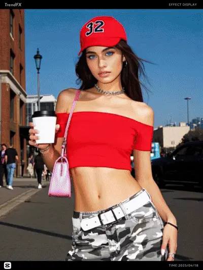
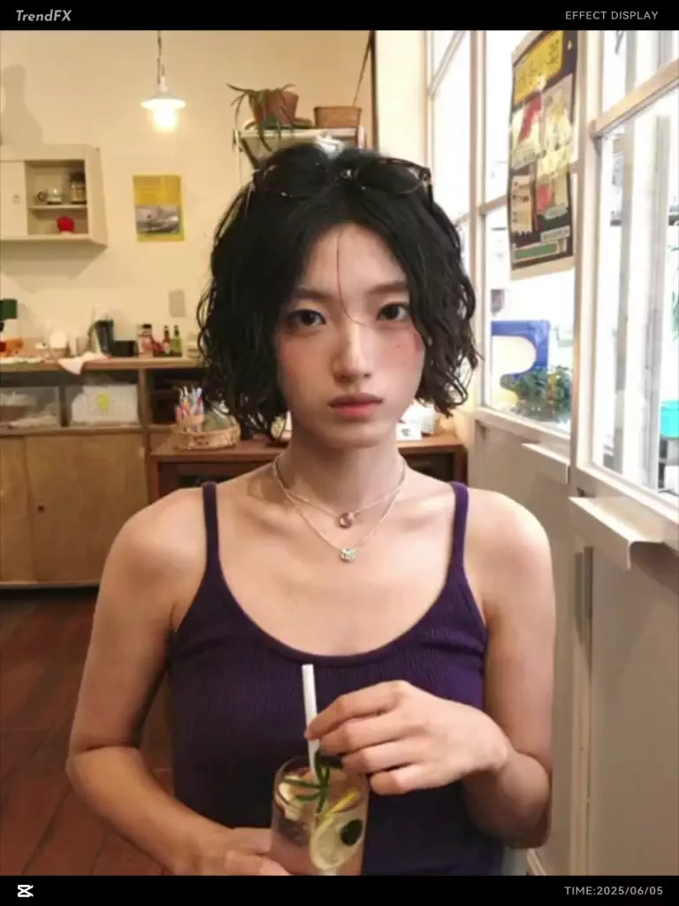
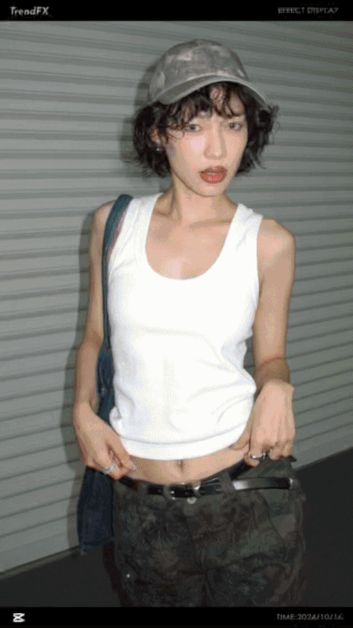
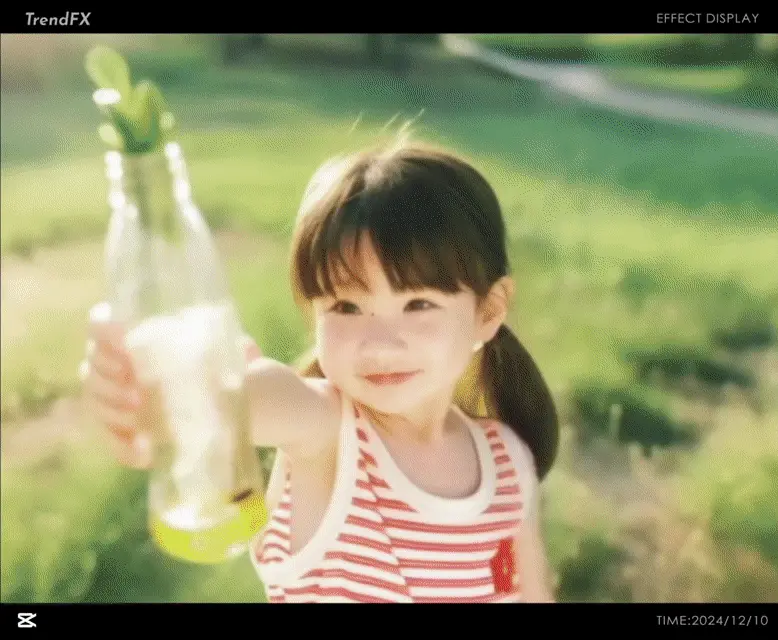

Multimodal Training Dataset Construction for Video Generation Models
current work
My current work focuses on multimodal training data: sourcing public data, selecting and clustering samples, VLM-based cleaning, pairing, operator processing, and dataset delivery.
Scaling4D: Pushing the Frontier of Video Novel View Synthesis through Large-Scale Monocular Videos
CVPR 2026
Contributed synthetic rendering data and data-pipeline development.
Hongrui Cai, Junjie Luo, Zhihong Fu, Shengnan Zhu, Jiawei Wen, Wanquan Feng†, Songtao Zhao, Qian He
Spatio-temporal Disentangled Data Construction for Motion Transfer
Rendering-Based Dataset Construction
Designed a rendering-based dataset for motion transfer, consisting of temporally aligned multi-view videos across multiple actions, identities, and environments to support training-data construction for spatio-temporal transfer research.
AI Effects


Synthetic Rendering Data for Video LoRA Training
production workflow and model support
Drove the ongoing development of rendering-platform infrastructure and produced controllable synthetic rendering data for video LoRA training, supporting multiple AI video effects launched in production.
Model Applications


Image and Video Model Applications
production workflow and model support
Supported video generation model applications with ComfyUI-based tooling, including plugins for I2V-Control and ID-Keep, open-source model adaptation, and application-oriented workflow integration.